Small Language Models (SLM)
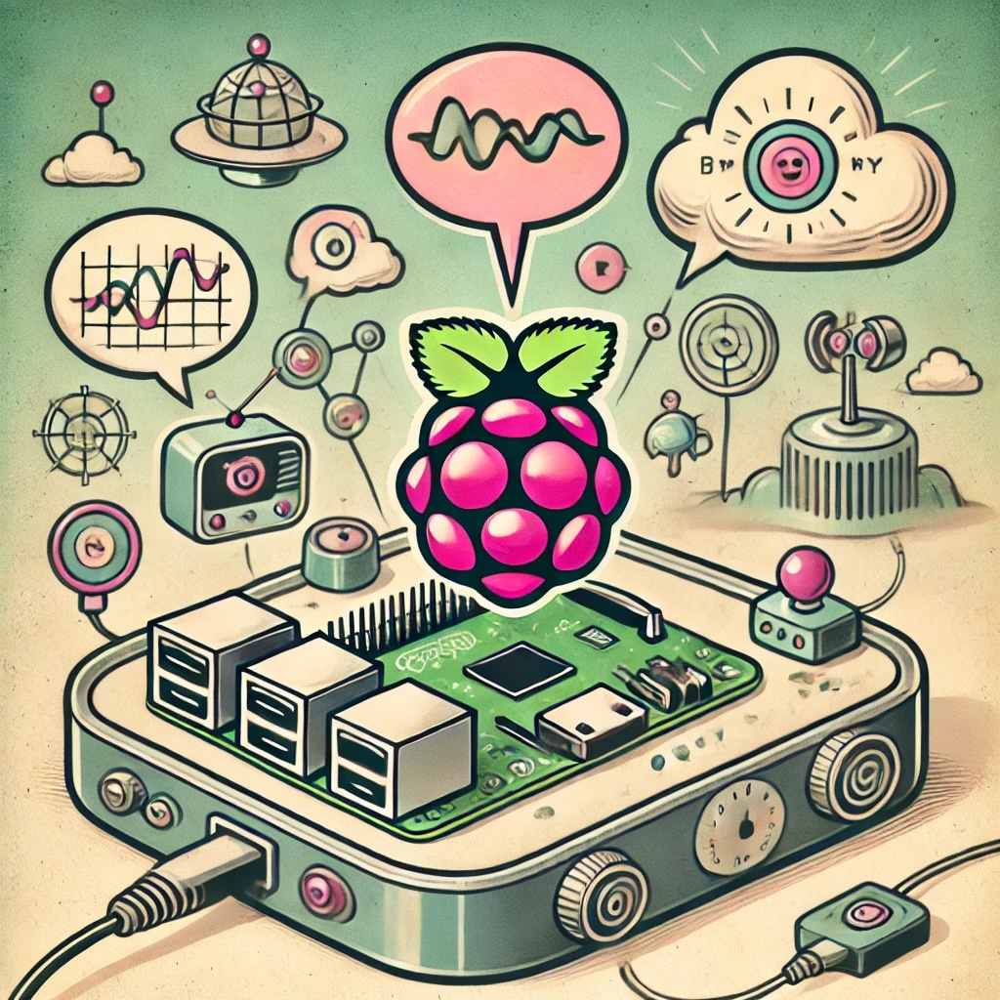
Introduction
In the fast-growing area of artificial intelligence, edge computing presents an opportunity to decentralize capabilities traditionally reserved for powerful, centralized servers. This chapter explores the practical integration of small versions of traditional large language models (LLMs) into a Raspberry Pi 5, transforming this edge device into an AI hub capable of real-time, on-site data processing.
As large language models grow in size and complexity, Small Language Models (SLMs) offer a compelling alternative for edge devices, striking a balance between performance and resource efficiency. By running these models directly on Raspberry Pi, we can create responsive, privacy-preserving applications that operate even in environments with limited or no internet connectivity.
This chapter guides us through setting up, optimizing, and leveraging SLMs on Raspberry Pi. We will explore the installation and utilization of Ollama. This open-source framework allows us to run LLMs locally on our machines (desktops or edge devices such as NVIDIA Jetson or Raspberry Pis).
Ollama is designed to be efficient, scalable, and easy to use, making it a good option for deploying AI models such as Microsoft Phi, Google Gemma, Meta Llama, and more. We will integrate some of those models into projects using Python’s ecosystem, exploring their potential in real-world scenarios (or at least point in this direction).
Setup
We could use any Raspberry Pi model in the previous labs, but here, the choice must be the Raspberry Pi 5 (Raspi-5). It is a robust platform that substantially upgrades the last version 4, equipped with the Broadcom BCM2712, a 2.4GHz quad-core 64-bit Arm Cortex-A76 CPU featuring Cryptographic Extension and enhanced caching capabilities. It boasts a VideoCore VII GPU, dual 4Kp60 HDMI® outputs with HDR, and a 4Kp60 HEVC decoder. Memory options include 4GB, 8GB, and 16GB of high-speed LPDDR4X SDRAM, with 8GB as our choice for running SLMs. It also features expandable storage via a microSD card slot and a PCIe 2.0 interface for fast peripherals such as M.2 SSDs (Solid State Drives).
For real SSL applications, SSDs are a better option than SD cards.
By the way, as Alasdair Allan discussed, inferencing directly on the Raspberry Pi 5 CPU—with no GPU acceleration—is now on par with the performance of the Coral TPU.

For more info, please see the complete article: Benchmarking TensorFlow and TensorFlow Lite on Raspberry Pi 5.
Raspberry Pi Active Cooler
We suggest installing an Active Cooler, a dedicated clip-on cooling solution for Raspberry Pi 5 (Raspi-5), for this lab. It combines an aluminum heatsink with a temperature-controlled blower fan to keep the Raspi-5 operating comfortably under heavy loads, such as running SLMs.
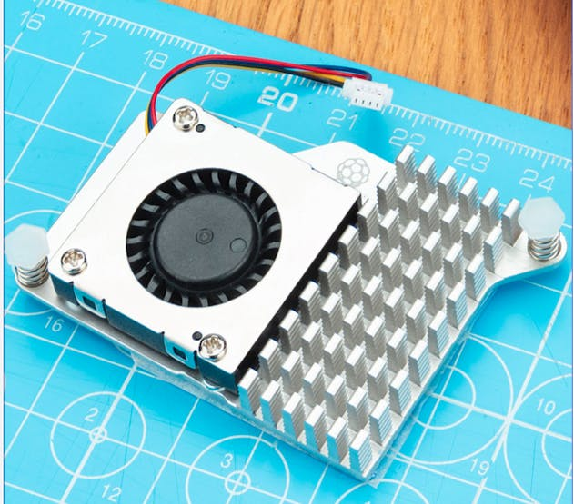
The Active Cooler has pre-applied thermal pads for heat transfer and is mounted directly to the Raspberry Pi 5 board using spring-loaded push pins. The Raspberry Pi firmware actively manages it: at 60°C, the blower’s fan is turned on; at 67.5°C, the fan speed is increased; and finally, at 75°C, the fan increases to full speed. The blower’s fan will spin down automatically when the temperature drops below these limits.
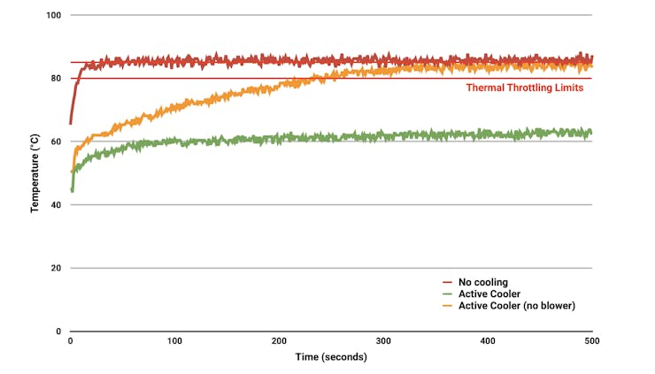
To prevent overheating, all Raspberry Pi boards begin to throttle the processor when the temperature reaches 80°Cand throttle even further when it reaches the maximum temperature of 85°C (more detail here).
Generative AI (GenAI)
Generative AI is an artificial intelligence system capable of creating new, original content across various media such as text, images, audio, and video. These systems learn patterns from existing data and use that knowledge to generate novel outputs that didn’t previously exist. Large Language Models (LLMs), Small Language Models (SLMs), and multimodal models can all be considered types of GenAI when used for generative tasks.
GenAI provides the conceptual framework for AI-driven content creation, with LLMs serving as powerful general-purpose text generators. SLMs adapt this technology for edge computing, while multimodal models extend GenAI capabilities across different data types. Together, they represent a spectrum of generative AI technologies, each with its strengths and applications, collectively driving AI-powered content creation and understanding.
Large Language Models (LLMs)
Large Language Models (LLMs) are advanced artificial intelligence systems that understand, process, and generate human-like text. These models are characterized by their massive scale in terms of the amount of data they are trained on and the number of parameters they contain. Critical aspects of LLMs include:
Size: LLMs typically contain billions of parameters. For example, GPT-3 has 175 billion parameters, while some newer models exceed a trillion parameters.
Training Data: They are trained on vast amounts of text data, often including books, websites, and other diverse sources, amounting to hundreds of gigabytes or even terabytes of text.
Architecture: Most LLMs use transformer-based architectures, which allow them to process and generate text by paying attention to different parts of the input simultaneously.
Capabilities: LLMs can perform a wide range of language tasks without specific fine-tuning, including:
- Text generation
- Translation
- Summarization
- Question answering
- Code generation
- Logical reasoning
Few-shot Learning: They can often understand and perform new tasks with minimal examples or instructions.
Resource-Intensive: Due to their size, LLMs typically require significant computational resources to run, often needing powerful GPUs or TPUs.
Continual Development: The field of LLMs is rapidly evolving, with new models and techniques constantly emerging.
Ethical Considerations: The use of LLMs raises important questions about bias, misinformation, and the environmental impact of training such large models.
Applications: LLMs are used in various fields, including content creation, customer service, research assistance, and software development.
Limitations: Despite their power, LLMs can produce incorrect or biased information and lack true understanding or reasoning capabilities.
We must note that we use large models beyond text, which we call multi-modal models. These models integrate and process information from multiple types of input simultaneously. They are designed to understand and generate content across various data types, such as text, images, audio, and video.
Certainly. Let’s define open and closed models in the context of AI and language models:
Closed vs Open Models:
Closed models, also called proprietary models, are AI models whose internal workings, code, and training data are not publicly disclosed. Examples: GPT-3 and beyond (by OpenAI), Claude (by Anthropic), Gemini (by Google).
Open models, also known as open-source models, are AI models whose code, architecture, and, often, training data are publicly available. Examples: Gemma (by Google), LLaMA (by Meta), and Phi (by Microsoft).
Open models are particularly relevant for running models on edge devices like Raspberry Pi as they can be more easily adapted, optimized, and deployed in resource-constrained environments. Still, it is crucial to verify their Licenses. Open models come with various open-source licenses that may affect their use in commercial applications, while closed models have clear, albeit restrictive, terms of service.
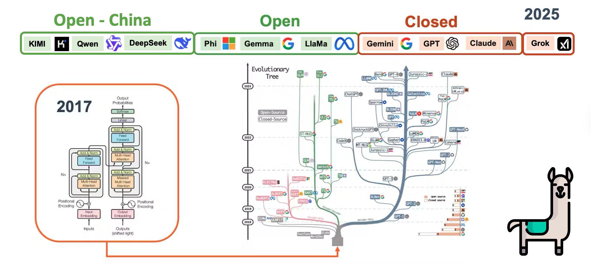
Small Language Models (SLMs)
In the context of edge computing on devices like Raspberry Pi, full-scale LLMs are typically too large and resource-intensive to run directly. This limitation has driven the development of smaller, more efficient models, such as the Small Language Models (SLMs).
SLMs are compact versions of LLMs designed to run efficiently on resource-constrained devices such as smartphones, IoT devices, and single-board computers like the Raspberry Pi. These models are significantly smaller in size and computational requirements than their larger counterparts while still retaining impressive language understanding and generation capabilities.
Key characteristics of SLMs include:
Reduced parameter count: Typically ranging from a few hundred million to a few billion parameters, compared to two-digit billions in larger models.
Lower memory footprint: Requiring, at most, a few gigabytes of memory rather than tens or hundreds of gigabytes.
Faster inference time: Can generate responses in milliseconds to seconds on edge devices.
Energy efficiency: Consuming less power, making them suitable for battery-powered devices.
Privacy-preserving: Enabling on-device processing without sending data to cloud servers.
Offline functionality: Operating without an internet connection.
SLMs achieve their compact size through various techniques such as knowledge distillation, model pruning, and quantization. While they may not match the broad capabilities of larger models, SLMs excel in specific tasks and domains, making them ideal for targeted applications on edge devices.
We will generally consider SLMs —language models with fewer than 5 to 8 billion parameters — quantized to 4 bits.
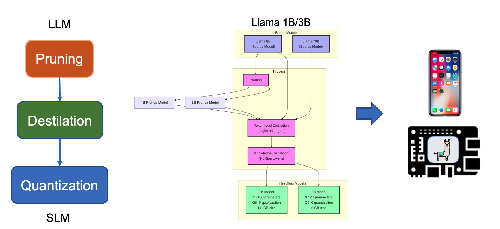
Examples of SLMs include compressed versions of models like Meta Llama, Microsoft PHI, and Google Gemma. These models enable a wide range of natural language processing tasks directly on edge devices, from text classification and sentiment analysis to question answering and limited text generation.
For more information on SLMs, the paper, LLM Pruning and Distillation in Practice: The Minitron Approach, provides an approach applying pruning and distillation to obtain SLMs from LLMs. And, SMALL LANGUAGE MODELS: SURVEY, MEASUREMENTS, AND INSIGHTS, presents a comprehensive survey and analysis of Small Language Models (SLMs), which are language models with 100 million to 5 billion parameters designed for resource-constrained devices.
Ollama

The primary and most user-friendly tool for running Small Language Models (SLMs) directly on a Raspberry Pi, especially the Pi 5, is Ollama. It is an open-source framework that allows us to install, manage, and run various SLMs (such as TinyLlama, smollm, Microsoft Phi, Google Gemma, Meta Llama, MoonDream, LLaVa, among others) locally on our Raspberry Pi for tasks such as text generation, image captioning, and translation.
Alternatives options:
llama.cppand the Hugging Face Transformers library are well-supported for running SLMs on Raspberry Pi. llama.cpp is particularly efficient for running quantized models natively. At the same time, Hugging Face Transformers offers a broader range of models and tasks, which are best suited to smaller architectures due to hardware limitations.
Here are some critical points about Ollama:
Local Model Execution: Ollama enables running LMs on personal computers or edge devices such as the Raspi-5, eliminating the need for cloud-based API calls.
Ease of Use: It provides a simple command-line interface for downloading, running, and managing different language models.
Model Variety: Ollama supports various LLMs, including Phi, Gemma, Llama, Mistral, and other open-source models.
Customization: Users can create and share custom models tailored to specific needs or domains.
Lightweight: Designed to be efficient and run on consumer-grade hardware.
API Integration: Offers an API that allows integration with other applications and services.
Privacy-Focused: By running models locally, it addresses privacy concerns associated with sending data to external servers.
Cross-Platform: Available for macOS, Windows, and Linux systems (our case, here).
Active Development: Regularly updated with new features and model support.
Community-Driven: Benefits from community contributions and model sharing.
To learn more about what Ollama is and how it works under the hood, you should see this short video from Matt Williams, one of the founders of Ollama:
Matt has an entirely free course about Ollama that we recommend:
Installing Ollama
Let’s set up and activate a Virtual Environment for working with Ollama:
python3 -m venv ~/ollama
source ~/ollama/bin/activateAnd run the command to install Ollama:
curl -fsSL https://ollama.com/install.sh | shAs a result, an API will run in the background on 127.0.0.1:11434. From now on, we can run Ollama via the terminal. For starting, let’s verify the Ollama version, which will also tell us that it is correctly installed:
ollama -v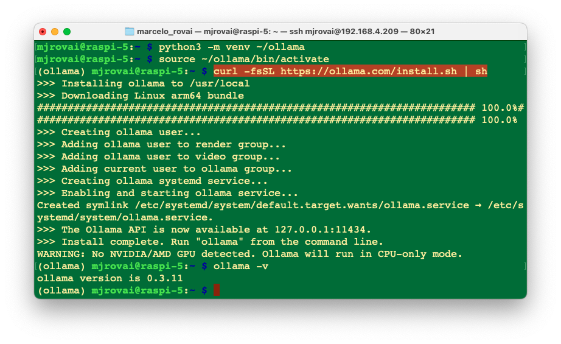
On the Ollama Library page, we can find the models Ollama supports. For example, by filtering by Most popular, we can see Meta Llama, Google Gemma, Microsoft Phi, LLaVa, etc.
Meta Llama 3.2 1B/3B
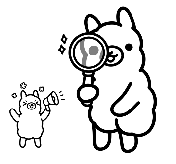
Let’s install and run our first small language model, Llama 3.2 1B (and 3B). The Meta Llama, 3.2 collections of multilingual large language models (LLMs), is a collection of pre-trained and instruction-tuned generative models in 1B and 3B sizes (text in/text out). The Llama 3.2 instruction-tuned text-only models are optimized for multilingual dialogue use cases, including agentic retrieval and summarization tasks.
The 1B and 3B models were pruned from the Llama 8B, and then logits from the 8B and 70B models were used as token-level targets (token-level distillation). Knowledge distillation was used to recover performance (they were trained with 9 trillion tokens). The 1B model has 1,24B, quantized to integer (Q8_0), and the 3B, 3.12B parameters, with a Q4_0 quantization, which ends with a size of 1.3 GB and 2GB, respectively. Its context window is 131,072 tokens.

Install and run the Model
ollama run llama3.2:1bRunning the model with the command before, we should have the Ollama prompt available for us to input a question and start chatting with the LLM model; for example,
>>> What is the capital of France?
Almost immediately, we get the correct answer:
The capital of France is Paris.
Using the option --verbose when calling the model will generate several statistics about its performance (The model will be polling only the first time we run the command).

Each metric gives insights into how the model processes inputs and generates outputs. Here’s a breakdown of what each metric means:
- Total Duration (2.620170326s): This is the complete time taken from the start of the command to the completion of the response. It encompasses loading the model, processing the input prompt, and generating the response.
- Load Duration (39.947908ms): This duration indicates the time to load the model or necessary components into memory. If this value is minimal, it can suggest that the model was preloaded or that only a minimal setup was required.
- Prompt Eval Count (32 tokens): The number of tokens in the input prompt. In NLP, tokens are typically words or subwords, so this count includes all the tokens that the model evaluated to understand and respond to the query.
- Prompt Eval Duration (1.644773s): This measures the model’s time to evaluate or process the input prompt. It accounts for the bulk of the total duration, implying that understanding the query and preparing a response is the most time-consuming part of the process.
- Prompt Eval Rate (19.46 tokens/s): This rate indicates how quickly the model processes tokens from the input prompt. It reflects the model’s speed in terms of natural language comprehension.
- Eval Count (8 token(s)): This is the number of tokens in the model’s response, which in this case was, “The capital of France is Paris.”
- Eval Duration (889.941ms): This is the time taken to generate the output based on the evaluated input. It’s much shorter than the prompt evaluation, suggesting that generating the response is less complex or computationally intensive than understanding the prompt.
- Eval Rate (8.99 tokens/s): Similar to the prompt eval rate, this indicates the speed at which the model generates output tokens. It’s a crucial metric for understanding the model’s efficiency in output generation.
This detailed breakdown can help understand the computational demands and performance characteristics of running SLMs like Llama on edge devices like the Raspberry Pi 5. It shows that while prompt evaluation is more time-consuming, the actual generation of responses is relatively quicker. This analysis is crucial for optimizing performance and diagnosing potential bottlenecks in real-time applications.
Loading and running the 3B model, we can see the difference in performance for the same prompt;
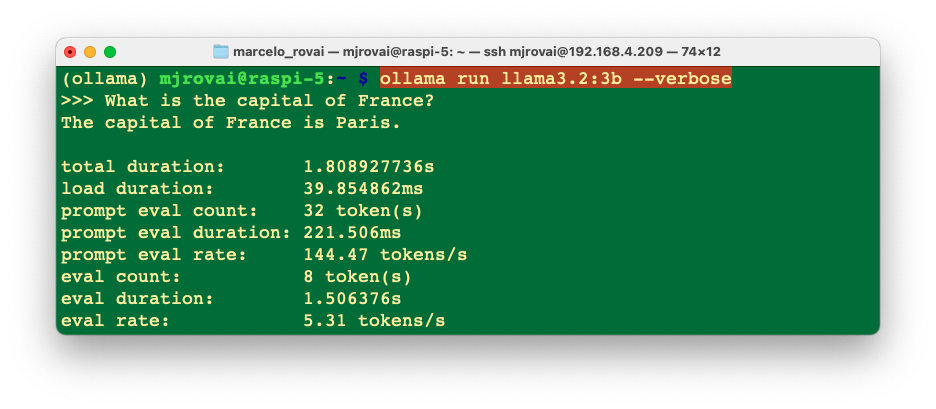
The eval rate is lower, 5.3 tokens/s versus 9 tokens/s with the smaller model.
When question about
>>> What is the distance between Paris and Santiago, Chile?
The 1B model answered 9,841 kilometers (6,093 miles), which is inaccurate, and the 3B model answered 7,300 miles (11,700 km), which is close to the correct (11,642 km).
Let’s ask for the Paris’s coordinates:
>>> what is the latitude and longitude of Paris?
The latitude and longitude of Paris are 48.8567° N (48°55'
42" N) and 2.3510° E (2°22' 8" E), respectively.
Both 1B and 3B models gave correct answers.
Google Gemma
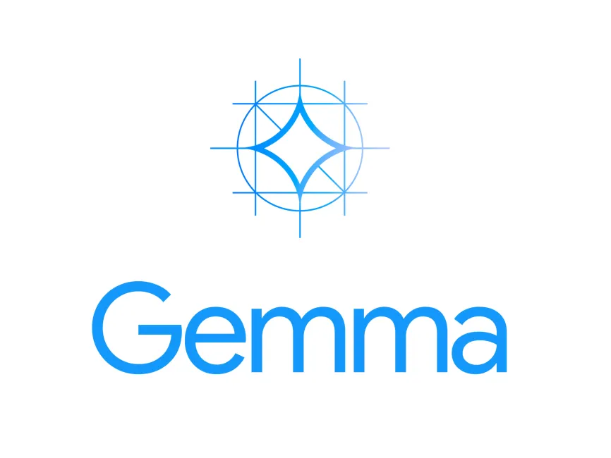
Google Gemma, is a collection of lightweight, state-of-the-art open models built from the same technology that powers our Gemini models. Today, the Gemma family has the Gemma3 and Gemma3n models.
Gemma3
We can, for example, install gemma3:latest, using ollama run gemma3:latest. This model has 4.3B parameters, with a context length of 8,192 and an embedding length of 2,560. A typical quantization schema is the Q4_K_M. This model has vision capabilities. Besides the 4B, we can also install the 1B parameter model.
Install and run the Model
ollama run gemma3:4b --verboseRunning the model with the command before, we should have the Ollama prompt available for us to input a question and start chatting with the LLM model; for example,
>>> What is the capital of France?
Almost immediately, we get the correct answer:
The capital of France is **Paris**. It's a global center for art, fashion, gastronomy, and culture. üòä Do you want to know anything more about Paris?
And its statistics.
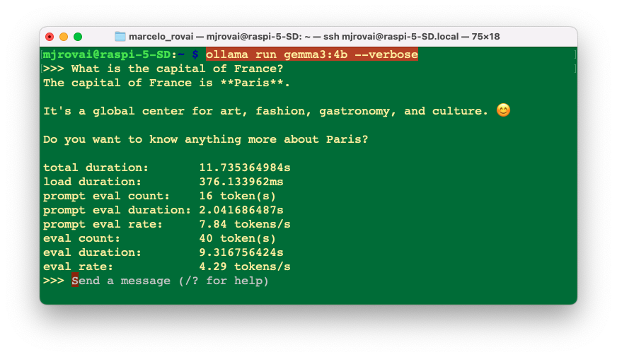
We can see that Gemma 3:4B has roughly the same performance as Lama 3.2:3B, despite having more parameters.
Other examples:
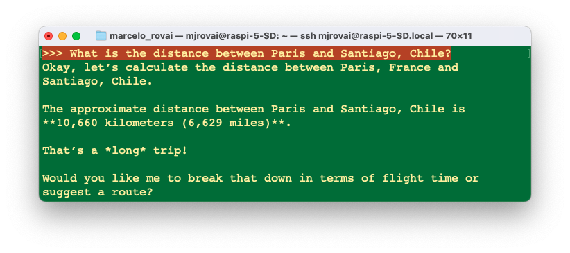
Also, a good response but less accurate than Llama3.2:3B.
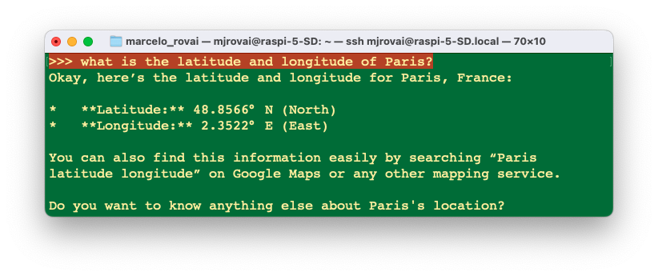
A good and accurate answer (a little more verbose than the Llama answers).
An advantage of the Gemma3 models are their vision capability, for example, we can ask it to caption an image:
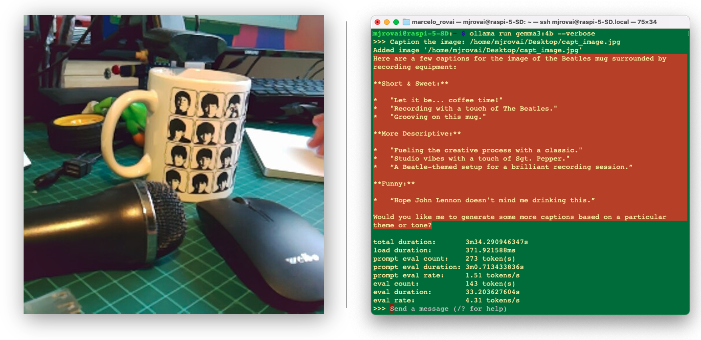
This is a very accurate model, but it still has high latency, as we can see in the example above (more than 3 minutes to caption the image).
The Gemma 3 1B size models are text only and don’t support image input.
Gemma 3n
Gemma3 is a powerful, efficient open-source model that runs locally on phones, tablets, and laptops. The models are listed with parameter counts, such as E2B and E4B, that are lower than the total number of parameters contained in the models. The E prefix indicates these models can operate with a reduced set of Effective parameters. This reduced-parameter operation can be achieved using the flexible parameter technology built into Gemma 3n models, which helps them run efficiently on lower-resource devices.
The parameters in Gemma 3n models are divided into four main groups: text, visual, audio, and per-layer embedding (PLE) parameters. In the standard execution of the E2B model, over 5 billion parameters are loaded. However, by using parameter skipping and PLE caching, this model can be operated with an effective memory load of just under 2 billion (1.91B) parameters, as illustrated below:
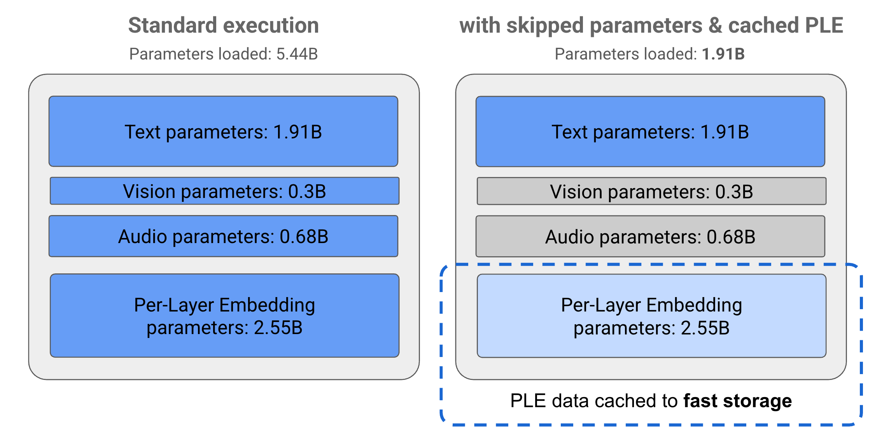
Once installed, (using ollama run gemma3n:e2b), inspecting the model we get:
- Architecture: gemma3n
- Parameters: 4.5B
- Context length 32768
- Embedding length 2048
- Quantization Q4_K_M
- Capabilities: completion only
When we run it, we can see that, despite having 4.5B parameters, it is faster than Llama3.3:3B.
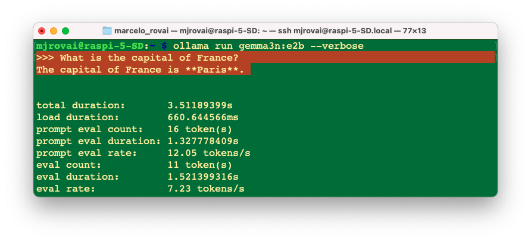
Microsoft Phi3.5 3.8B
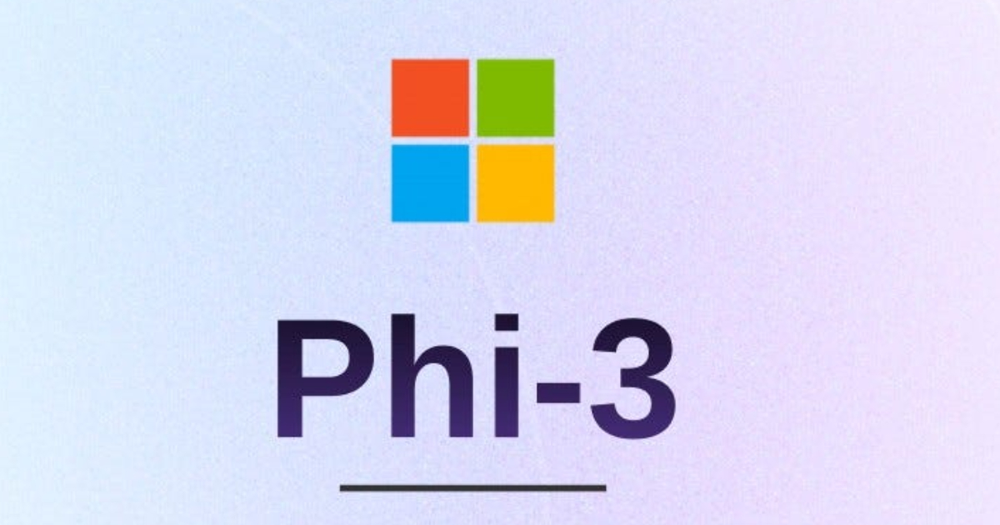
Let’s pull now the PHI3.5, a 3.8B lightweight state-of-the-art open model by Microsoft. The model belongs to the Phi-3 model family and supports 128K token context length and the languages: Arabic, Chinese, Czech, Danish, Dutch, English, Finnish, French, German, Hebrew, Hungarian, Italian, Japanese, Korean, Norwegian, Polish, Portuguese, Russian, Spanish, Swedish, Thai, Turkish, and Ukrainian.
The model size, in terms of bytes, will depend on the specific quantization format used. The size can go from 2-bit quantization (q2_k) of 1.4 GB (higher performance/lower quality) to 16-bit quantization (fp-16) of 7.6 GB (lower performance/higher quality).
Let’s run the 4-bit quantization (Q4_0), which will need 2.2 GB of RAM, with an intermediary trade-off regarding output quality and performance.
ollama run phi3.5:3.8b --verboseYou can use
runorpullto download the model. What happens is that Ollama keeps note of the pulled models, and once the PHI3 does not exist, before running it, Ollama pulls it.
Let’s enter with the same prompt used before:
>>> What is the capital of France?
The capital of France is Paris. It' extradites significant
historical, cultural, and political importance to the country as
well as being a major European city known for its art, fashion,
gastronomy, and culture. Its influence extends beyond national
borders, with millions of tourists visiting each year from around
the globe. The Seine River flows through Paris before it reaches
the broader English Channel at Le Havre. Moreover, France is one
of Europe's leading economies with its capital playing a key role
...The answer was very “verbose”, let’s specify a better prompt:
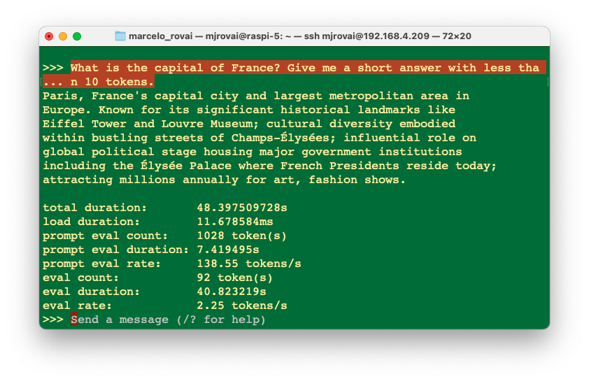
In this case, the answer was still longer than we expected, with an eval rate of 2.25 tokens/s, more than double that of Gemma and Llama.
Choosing the most appropriate prompt is one of the most important skills to be used with LLMs, no matter its size.
When we asked the same questions about distance and Latitude/Longitude, we did not get a good answer for a distance of 13,507 kilometers (8,429 miles), but it was OK for coordinates. Again, it could have been less verbose (more than 200 tokens for each answer).
We can use any model as an assistant since their speed is relatively decent, but in October 2024, the Llama2:3B or Gemma 3 are better choices. Try other models, depending on your needs. ü§ó Open LLM Leaderboard can give you an idea about the best models in size, benchmark, license, etc.
The best model to use is the one fit for your specific necessity. Also, take into consideration that this field evolves with new models everyday.
MoonDream
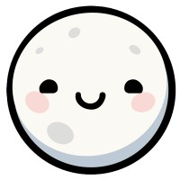
Moondream is an open-source visual language model that understands images using simple text prompts. It’s fast and wildly capable. It is 3 to 4 times faster than the Gemma3, for example.
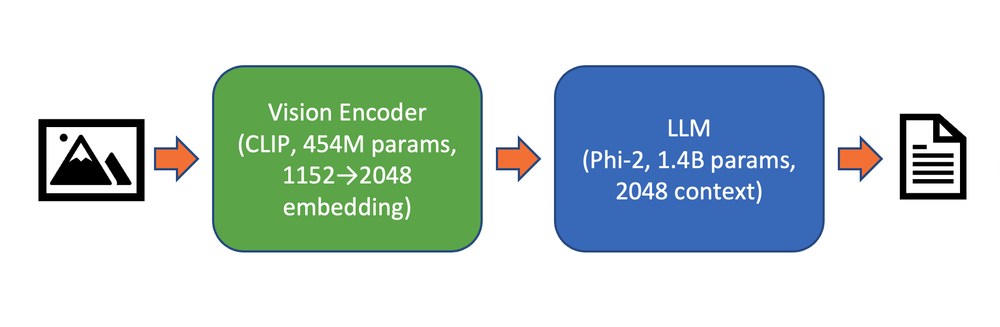
Moondream is a compact and efficient open-source vision-language model (VLM) designed to analyze images and generate descriptive text, answer questions, detect objects, count, point, and perform OCR—all through natural-language instructions, even on resource-limited devices like the Raspberry Pi or edge hardware.
Below is a diagram showing the flux from an image and its description:
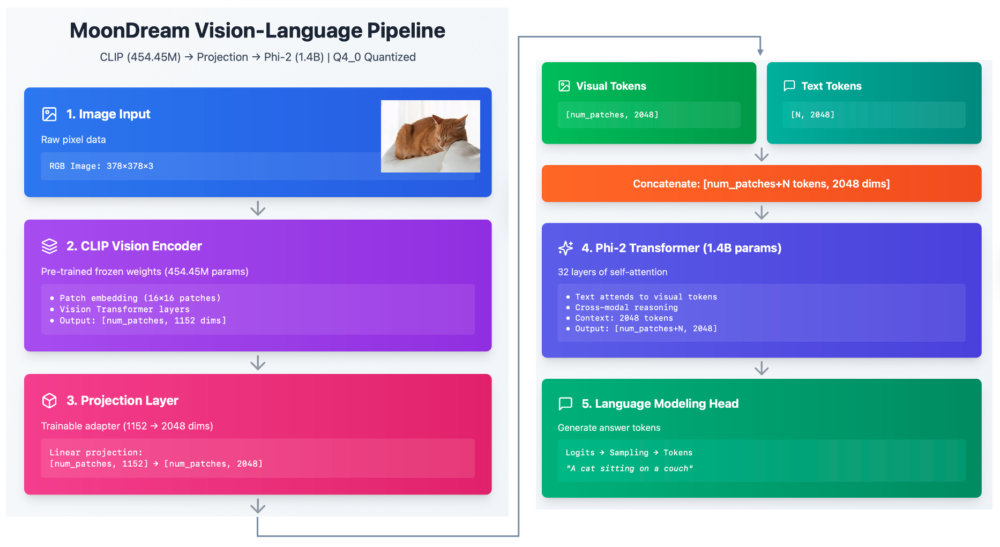
Moondream can interpret images much like a human would, enabling tasks like: • Captioning and describing images in detail • Visual question answering (VQA) such as “What is the color of the shirt?” • Object detection and pointing out locations • Counting and contextual reasoning about visual scenes
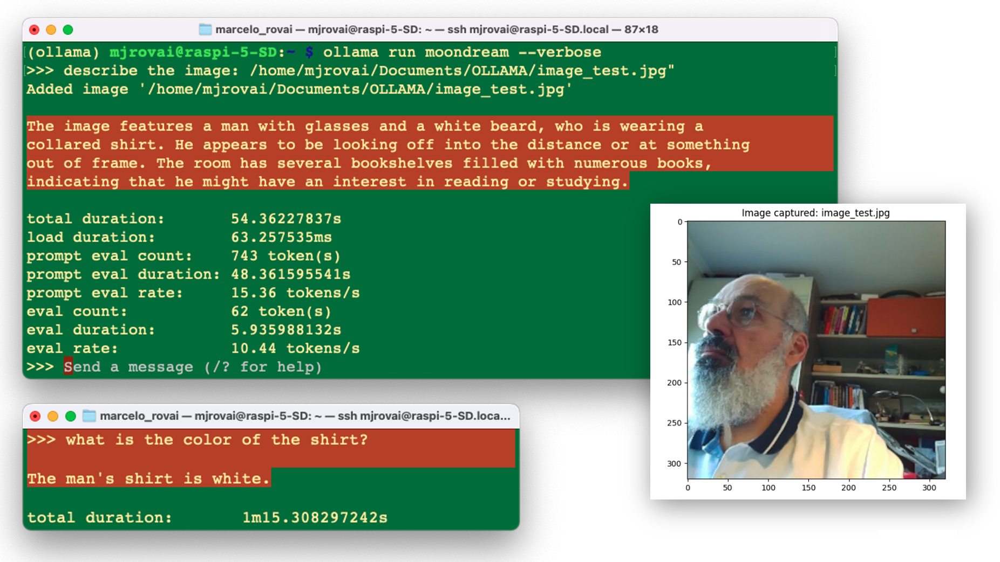
Lava-Phi-3

Another multimodal model is the LLaVA-Phi-3, a fine-tuned LLaVA model from Phi 3 Mini 4k. It has strong performance benchmarks that are on par with the original LLaVA (Large Language and Vision Assistant) model.
In terms of latency, it is a pair with Gemma3 and much slower than MoonDream
The LLaVA-Phi-3 is an end-to-end trained large multimodal model designed to understand and generate content based on visual inputs (images) and textual instructions. It combines the capabilities of a visual encoder and a language model to process and respond to multimodal inputs.
Let’s install the model:
ollama run llava-phi3:3.8b --verboseLet’s start with a text input:
>>> You are a helpful AI assistant. What is the capital of France?
As an AI language model, I can tell you that the capital of France
is Paris. It's not only the largest city in the country but also
serves as its political and administrative center. Paris is known
for its iconic landmarks such as the Eiffel Tower, Notre-Dame
Cathedral, and the Louvre Museum. The city has a rich history,
beautiful architecture, and is widely considered to be one of the
most romantic cities in the world.The response took around 30s, with an eval rate of 3.93 tokens/s! Not bad!
But let us know to enter with an image as input. For that, let’s create a directory for working:
cd Documents/
mkdir OLLAMA
cd OLLAMALet’s download a 640x320 image from the internet, for example (Wikipedia: Paris, France):
{kind=link}

Using FileZilla, for example, let’s upload the image to the OLLAMA folder on the Raspi-5 and name it image_test_1.jpg. We should have the whole image path (we can use pwd to get it).
/home/mjrovai/Documents/OLLAMA/image_test_1.jpg
If you use a desktop, you can copy the image path by right-clicking the image.
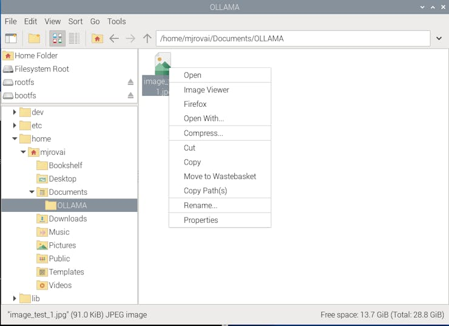
Let’s enter with this prompt:
>>> Describe the image /home/mjrovai/Documents/OLLAMA/image_test_1.jpgThe result was great, but the overall latency was significant; almost 4 minutes to perform the inference.

Inspecting local resources
Using htop, we can monitor the resources running on our device.
htopDuring the time that the model is running, we can inspect the resources:

All four CPUs run at almost 100% of their capacity, and the memory used with the model loaded is 3.24GB. Exiting Ollama, the memory goes down to around 377MB (with no desktop).
It is also essential to monitor the temperature. When running the Raspberry with a desktop, you can have the temperature shown on the taskbar:

If you are “headless”, the temperature can be monitored with the command:
vcgencmd measure_tempIf you are doing nothing, the temperature is around 50°C for CPUs running at 1%. During inference, with the CPUs at 100%, the temperature can rise to almost 70°C. This is OK and means the active cooler is working, keeping the temperature below 80°C / 85°C (its limit).
Ollama Python Library
So far, we have explored SLMs’ chat capability using the command line on a terminal. However, we want to integrate those models into our projects, so Python seems to be the right path. The good news is that Ollama has such a library.
The Ollama Python library simplifies interaction with advanced LLM models, enabling more sophisticated responses and capabilities, besides providing the easiest way to integrate Python 3.8+ projects with Ollama.
For a better understanding of how to create apps using Ollama with Python, we can follow Matt Williams’s videos, as the one below:
Installation:
In the terminal, run the command:
pip install ollamaWe will need a text editor or an IDE to create a Python script. If we run Raspberry Pi OS on a desktop, several options, such as Thonny and Geany, are already installed by default (accessed via [Menu][Programming]). You can download other IDEs, such as Visual Studio Code, from [Menu][Recommended Software]. When the window pops up, go to [Programming], select your option, and press [Apply].

If you prefer using Jupyter Notebook for development:
pip install jupyter
jupyter notebook --generate-configTo run Jupyter Notebook, run the command (change the IP address for yours):
jupyter notebook --ip=192.168.4.209 --no-browserOn the terminal, you can see the local URL address to open the notebook:

We can access it from another computer by entering the Raspberry Pi’s IP address and the provided token in a web browser (we should copy it from the terminal).
In our working directory in the Raspi, we will create a new Python 3 notebook.
Let’s enter with a very simple script to verify the installed models:
import ollama
models = ollama.list()
for model in models['models']:
print(model['model'])gemma3:4b
riven/smolvlm:latest
gemma3n:e2b
moondream:latest
llama3.2:3bSame as we had on the terminal using ollama show llama 3.2: 3b , we can get model information:
info = ollama.show('llama3.2:3b')
print("Model/Format :", getattr(info, 'model', None))
print("Parameter Size :", getattr(info.details, 'parameter_size', None))
print("Quantization Level :", getattr(info.details, 'quantization_level', None))
print("Family :", getattr(info.details, 'family', None))
print("Supported Capabilities:", getattr(info, 'capabilities', None))
print("Date Modified (Local) :", getattr(info, 'modified_at', None))
print("License Short :", (str(getattr(info, 'license', None)).split('\n')[0]))
print("Key Architecture Details:")
for key in [
'general.architecture', 'general.finetune',
'llama.context_length', 'llama.embedding_length', 'llama.block_count'
]:
print(f" - {key}: {info.modelinfo.get(key)}")As a result, we have:
Model/Format : None
Parameter Size : 3.2B
Quantization Level : Q4_K_M
Family : llama
Supported Capabilities : ['completion', 'tools']
Date Modified (Local) : 2025-09-15 15:39:48.153510-03:00
License Short : LLAMA 3.2 COMMUNITY LICENSE AGREEMENT
Key Architecture Details :
- general.architecture: llama
- general.finetune: Instruct
- llama.context_length: 131072
- llama.embedding_length: 3072
- llama.block_count: 28Ollama Generate
Let’s repeat one of the questions that we did before, but now using ollama.generate() from the Ollama Python library. This API generates a response for the given prompt using the provided model. This is a streaming endpoint, so there will be a series of responses. The final response object will include statistics and additional data from the request.
response = ollama.generate(
model="llama3.2:3b",
prompt="Qual a capital do Brasil"
)
print(response['response'])We get the response: A capital do Brasil é Brasília.
If you are running the code as a Python script, you should save it as, for example, test_ollama.py. You can run it in the IDE or run it directly in the terminal. Also, remember always to call the model and define it when running a stand-alone script.
python test_ollama.pyLet’s print the full response now. As a result, we will have the model response in a JSON format:
GenerateResponse(model='llama3.2:3b', created_at='2025-10-14T18:30:43.877536633Z',
done=True, done_reason='stop', total_duration=28105898130, load_duration=23201685971,
prompt_eval_count=30, prompt_eval_duration=3364148131, eval_count=9,
eval_duration=1539216446, response='A capital do Brasil é Brasília.', thinking=None,
context=[128006, 9125, 128007, 271, 38766, 1303, 33025, 2696, 25, 6790, 220, 2366, 18,
271, 128009, 128006, 882, 128007, 271, 32129, 264, 6864, 656, 43025, 128009, 128006,
78191, 128007, 271, 32, 6864, 656, 43025, 4046, 62224, 76472, 13])As we can see, several pieces of information are generated, such as:
response: the main output text generated by the model in response to our prompt.
A capital do Brasil é Brasília.
context: the token IDs representing the input and context used by the model. Tokens are numerical representations of text that the language model uses for processing.
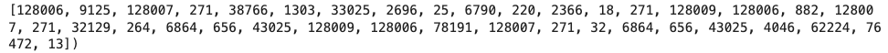
The Performance Metrics:
- total_duration: The total time taken for the operation in nanoseconds. In this case, approximately 2.81 seconds.
- load_duration: The time taken to load the model or components in nanoseconds. About 0.23 seconds.
- prompt_eval_duration: The time taken to evaluate the prompt in nanoseconds. Around 0.33 seconds.
- eval_count: The number of tokens evaluated during the generation. Here, 9 tokens.
- eval_duration: The time taken for the model to generate the response in nanoseconds. Approximately 1.54 seconds.
But what we want is the plain ‘response’ and, perhaps for analysis, the total duration of the inference, so let’s change the code to extract it from the dictionary:
print(f"\n{response['response']}")
print(f"\n [INFO] Total Duration: {(response['total_duration']/1e9):.2f} seconds")Now, we got:
A capital do Brasil é Brasília.
[INFO] Total Duration: 2.81 secondsStreaming with ollama.generate()
To stream the output from ollama.generate() in Python, set stream=True and iterate over the generator to print each chunk as it’s produced. This enables real-time response streaming, similar to chat models.
stream = ollama.generate(
model='llama3.2:3b',
prompt='Tell me an interesting fact about Brazil',
stream=True
)
for chunk in stream:
print(chunk['response'], end='', flush=True)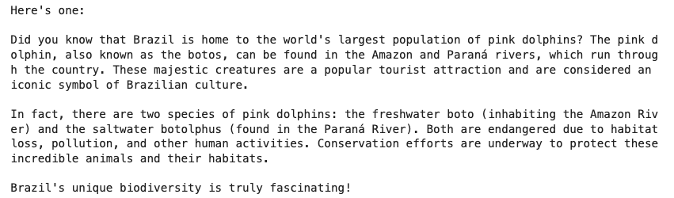
- Each
chunk['response']is a part of the generated text, streamed as it’s created - This allows responsive, real-time interaction in the terminal or UI.
This approach is ideal for long or complex generations, making the user experience feel faster and more interactive.
System Prompt
Add a system parameter to set overall instructions or behavior for the model (useful for role assignment and tone control):
response = ollama.generate(model='llama3.2:3b',
prompt='Tell about industry',
system='You are an expert on Brazil.',
stream=False)
print(response['response']) 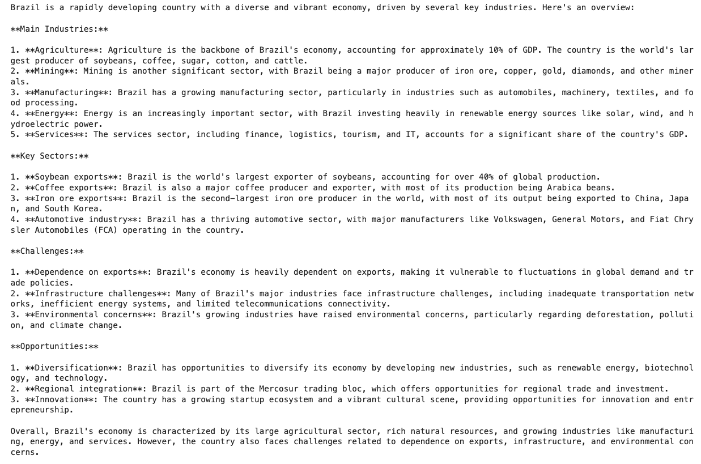
Temperature and Sampling
Control creativity/randomness via temperature, and customize output style with extra settings like top_p and num_ctx (context window size)
response = ollama.generate(
model='llama3.2:3b',
prompt='Why the sky is blue?',
options={'temperature':0.1},
stream=True)
for chunk in response:
print(chunk['response'], end='', flush=True)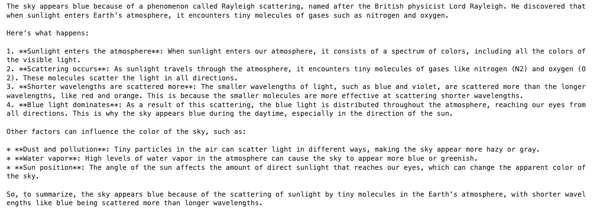
response = ollama.chat(
messages=[
{"role": "user",
"content": "Poetically describe Paris in one short sentence"},
],
model='llama3.2:3b',
options={"temperature": 1.0} # Set. temp. to 1.0 for more creativity
)
print(response['message']['content'])Like a velvet-draped secret, Paris whispers ancient mysteries to the moonlit
Seine, her sighing shadows weaving an eternal waltz of love and dreams.Ollama.chat()
Another way to get our response is to use ollama.chat(), which generates the next message in a chat with a provided model. This is a streaming endpoint, so a series of responses will occur. Streaming can be disabled using "stream": false. The final response object will also include statistics and additional data from the request.
PROMPT_1 = 'What is the capital of France?'
response = ollama.chat(model=MODEL, messages=[
{'role': 'user','content': PROMPT_1,},])
resp_1 = response['message']['content']
print(f"\n{resp_1}")
print(f"\n [INFO] Total Duration: {(res['total_duration']/1e9):.2f} seconds")The answer is the same as before.
An important consideration is that by using ollama.generate(), the response is “clear” from the model’s “memory” after the end of inference (only used once), but If we want to keep a conversation, we must use ollama.chat(). Let’s see it in action:
PROMPT_1 = 'What is the capital of France?'
response = ollama.chat(model=MODEL, messages=[
{'role': 'user','content': PROMPT_1,},])
resp_1 = response['message']['content']
print(f"\n{resp_1}")
print(f"\n [INFO] Total Duration: {(response['total_duration']/1e9):.2f} seconds")
PROMPT_2 = 'and of Italy?'
response = ollama.chat(model=MODEL, messages=[
{'role': 'user','content': PROMPT_1,},
{'role': 'assistant','content': resp_1,},
{'role': 'user','content': PROMPT_2,},])
resp_2 = response['message']['content']
print(f"\n{resp_2}")
print(f"\n [INFO] Total Duration: {(response['total_duration']/1e9):.2f} seconds")In the above code, we are running two queries, and the second prompt considers the result of the first one.
Here is how the model responded:
The capital of France is **Paris**. üá´üá∑
[INFO] Total Duration: 2.82 seconds
The capital of Italy is **Rome**. üáÆüáπ
[INFO] Total Duration: 4.46 secondsThe above code works with two prompts. Let’s include a conversation variable to really provide the chat with a memory:
# Initialize conversation history
conversation = []
# Function to chat with memory
def chat_with_memory(prompt, model=MODEL):
global conversation
# Add user message to conversation
conversation.append({"role": "user", "content": prompt})
# Generate response with conversation history
response = ollama.chat(
model=MODEL,
messages=conversation
)
# Add assistant's response to conversation history
conversation.append(response["message"])
# Return just the response text
return response["message"]["content"]# Question
prompt = "Qual a capital do Brasil"
print(chat_with_memory(prompt))
# Ask a follow-up question that relies on memory
follow_up = "E a do Per√∫?"
print(chat_with_memory(follow_up))A capital do Brasil é Brasília.
A capital do Peru é Lima.Image Description:
As we did with the visual models and the command line to analyze an image, the same can be done here with Python. Let’s use the same image of Paris, but now with the ollama.generate():
MODEL = 'llava-phi3:3.8b'
PROMPT = "Describe this picture"
with open('image_test_1.jpg', 'rb') as image_file:
img = image_file.read()
response = ollama.generate(
model=MODEL,
prompt=PROMPT,
images= [img]
)
print(f"\n{response['response']}")
print(f"\n [INFO] Total Duration: {(res['total_duration']/1e9):.2f} seconds")Here is the result:
This image captures the iconic cityscape of Paris, France. The vantage point
is high, providing a panoramic view of the Seine River that meanders through
the heart of the city. Several bridges arch gracefully over the river,
connecting different parts of the city. The Eiffel Tower, an iron lattice
structure with a pointed top and two antennas on its summit, stands tall in the
background, piercing the sky. It is painted in a light gray color, contrasting
against the blue sky speckled with white clouds.
The buildings that line the river are predominantly white or beige, their uniform
color palette broken occasionally by red roofs peeking through. The Seine River
itself appears calm and wide, reflecting the city's architectural beauty in its
surface. On either side of the river, trees add a touch of green to the urban
landscape.
The image is taken from an elevated perspective, looking down on the city. This
viewpoint allows for a comprehensive view of Paris's beautiful architecture and
layout. The relative positions of the buildings, bridges, and other structures
create a harmonious composition that showcases the city's charm.
In summary, this image presents a serene day in Paris, with its architectural
marvels - from the Eiffel Tower to the river-side buildings - all bathed in soft
colors under a clear sky.
[INFO] Total Duration: 256.45 secondsThe model took about 4 minutes (256.45 s) to return with a detailed image description.
Let’s capture an image from the Raspberry Pi camera and get the description, now using the MoonDream model:
import time
import numpy as np
import matplotlib.pyplot as plt
from picamera2 import Picamera2
from PIL import Image
def capture_image(image_path):
# Initialize camera
picam2 = Picamera2() # default is index 0
# Configure the camera
config = picam2.create_still_configuration(main={"size": (520, 520)})
picam2.configure(config)
picam2.start()
# Wait for the camera to warm up
time.sleep(2)
# Capture image
picam2.capture_file(image_path)
print("Image captured: "+image_path)
# Stop camera
picam2.stop()
picam2.close()Using the above code, we can capture an image, which can be displayed with:
def show_image(image_path):
img = Image.open(image_path)
# Display the image
plt.figure(figsize=(6, 6))
plt.imshow(img)
plt.title("Captured Image")
plt.show()Let’s also create a function to describe the image:
def image_description(img_path, model):
with open(img_path, 'rb') as file:
response = ollama.chat(
model=model,
messages=[
{
'role': 'user',
'content': '''return the description of the image''',
'images': [file.read()],
},
],
options = {
'temperature': 0,
}
)
return responseNow, let’s put all togheter and capture an image from the camera:
IMG_PATH = "/home/mjrovai/Documents/OLLAMA/SST/capt_image.jpg"
MODEL = "moondream:latest"apture_image(IMG_PATH)
show_image(IMG_PATH)
response = image_description(IMG_PATH, MODEL)
caption = response['message']['content']
print ("\n==> AI Response:", caption)
print(f"\n[INFO] ==> Total Duration: {
(response['total_duration']/1e9):.2f} seconds")Pointing the camera at my table:
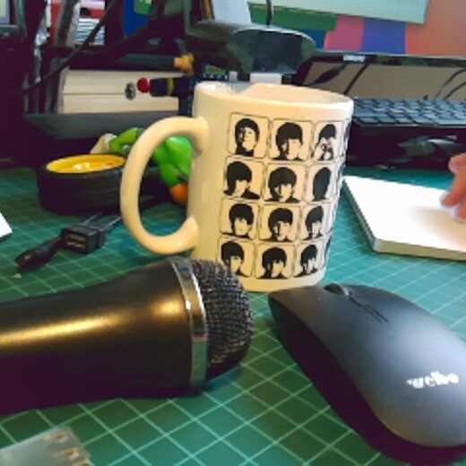
We got the description:
The image features a green table with various items on it. A white mug adorned with
black faces is prominently displayed, and there are several other mugs scattered around
the table as well. In addition to the mugs, there's also a microphone placed near them,
suggesting that this might be an office or workspace setting where someone could enjoy
their coffee while recording podcasts or audio content.
A computer keyboard can be seen in the background, indicating that it is likely
connected to a computer for work purposes. A mouse and a cell phone are also present on
the table, further emphasizing the technology-oriented nature of this scene.
[INFO] ==> Total Duration: 82.57 secondsWe can now change the image_description function to ask “Who are the faces in the mug?”. The answer:
==> AI Response:
The mug has a picture of the Beatles on it.In the Ollama_Python_Library Intro notebook, we can find the experiments using the Ollama Python library.
Calling Direct API
One alternative to running an SLM in Python using Ollama is to call the API directly. Let’s explore some advantages and disadvantages of both methods.
Python Library:
response = ollama.generate(
model=MODEL,
prompt=QUERY)
result = response['response']Direct API Calls:
import requests
import json
# Configuration
OLLAMA_URL = "http://localhost:11434/api"
MODEL = MODEL
response = requests.post(
f"{OLLAMA_URL}/generate",
json={
"model": MODEL,
"prompt": QUERY,
"stream": False
}
)response = requests.post(
f"{OLLAMA_URL}/generate",
json={"model": MODEL,
"prompt": query,
"stream": False}
)
result = response.json().get("response", "")One clear advantage of the Python library is that it handles URL construction, request formatting, and response parsing.
Error Handling
Python Library:
- Raises specific exceptions (e.g.,
ollama.ResponseError,ollama.RequestError) - Better typed error messages
- Automatically handles connection issues
Direct API Calls:
- We should manually check the
response.status_code - Generic HTTP errors
- Need to handle connection exceptions yourself
Connection Management
Python Library:
- Automatically detects Ollama instance (checks
OLLAMA_HOSTenv variable or defaults tolocalhost:11434) - Built-in connection pooling and retry logic
- Handles timeouts gracefully
Direct API Calls:
- We should specify the URL manually
- Must implement our own retry logic
- Need to manage connection pooling yourself
Features & Functionality
Python Library:
- Clean access to all Ollama features (generate, chat, embeddings, list models, pull, etc.)
- Streaming is simple:
for chunk in ollama.generate(..., stream=True) - Type hints and better IDE support
Direct API Calls:
- Access to any API endpoint, including undocumented ones
- Full control over request headers, timeouts, etc.
- Can use any HTTP library (requests, httpx, urllib, etc.)
Dependencies
Python Library:
pip install ollama- Adds a dependency to our project
- Depends on
httpxunder the hood
Direct API Calls:
pip install requests- We choose our HTTP library
- More lightweight if we only need basic functionality
Advanced Features
Python Library:
# Streaming
for chunk in ollama.generate(model=MODEL, prompt=query, stream=True):
print(chunk['response'], end='')
# Chat history
response = ollama.chat(
model=MODEL,
messages=[
{'role': 'user', 'content': 'Hello!'},
{'role': 'assistant', 'content': 'Hi there!'},
{'role': 'user', 'content': 'How are you?'}
]
)
# List models
models = ollama.list()
# Pull models
ollama.pull('llama3.2:3b')Direct API Calls:
- Require us to implement all these patterns manually
- More boilerplate code
When to Use Each?
Use the Python Library when:
- ‚úÖ Building standard applications
- ‚úÖ Need cleaner, more maintainable code
- ‚úÖ Need good error handling out of the box
- ‚úÖ Need streaming support
- ‚úÖ Okay with adding a dependency
Use Direct API Calls when:
- ‚úÖNeed fine-grained control over HTTP requests
- ‚úÖ Are working in a constrained environment
- ‚úÖ Need to customize timeouts, headers, or proxies
- ‚úÖ Need to minimize dependencies
- ‚úÖ Are debugging API issues
- ‚úÖ Need to access experimental/undocumented endpoints
Performance Difference
Minimal difference in practice! The Python library uses httpx which is comparable to requests. Both make the same underlying HTTP calls to Ollama.
Bottom line: For most use cases, the Python library is the better choice due to its simplicity and built-in features. Use direct API calls only when you need specific control or have constraints that prevent adding the dependency.
Going Further
The small LLM models tested worked well at the edge, both with text and with images, but, of course, the last one had high latency. A combination of specific, dedicated models can lead to better results; for example, in real cases, an Object Detection model (such as YOLO) can provide a general description and count of objects in an image, which, once passed to an LLM, can help extract essential insights and actions.
According to Avi Baum, CTO at Hailo,
In the vast landscape of artificial intelligence (AI), one of the most intriguing journeys has been the evolution of AI on the edge. This journey has taken us from classic machine vision to the realms of discriminative AI, enhancive AI, and now, the groundbreaking frontier of generative AI. Each step has brought us closer to a future where intelligent systems seamlessly integrate with our daily lives, offering an immersive experience of not just perception but also creation at the palm of our hand.

Conclusion
This chapter has demonstrated how a Raspberry Pi 5 can be transformed into a potent AI hub capable of running large language models (LLMs) for real-time, on-site data analysis and insights using Ollama and Python. The Raspberry Pi’s versatility and power, coupled with the capabilities of lightweight LLMs like Llama 3.2 and MoonDream, make it an excellent platform for edge computing applications.
The potential of running LLMs on the edge extends far beyond simple data processing, as in this lab’s examples. Here are some innovative suggestions for using this project:
1. Smart Home Automation:
- Integrate SLMs to interpret voice commands or analyze sensor data for intelligent home automation. This could include real-time monitoring and control of home devices, security systems, and energy management, all processed locally without relying on cloud services.
2. Field Data Collection and Analysis:
- Deploy SLMs on Raspberry Pi in remote or mobile setups for real-time data collection and analysis. This can be used in agriculture to monitor crop health, in environmental studies for wildlife tracking, or in disaster response for situational awareness and resource management.
3. Educational Tools:
- Create interactive educational tools that leverage SLMs to provide instant feedback, language translation, and tutoring. This can be particularly useful in developing regions with limited access to advanced technology and internet connectivity.
4. Healthcare Applications:
- Use SLMs for medical diagnostics and patient monitoring. They can provide real-time analysis of symptoms and suggest potential treatments. This can be integrated into telemedicine platforms or portable health devices.
5. Local Business Intelligence:
- Implement SLMs in retail or small business environments to analyze customer behavior, manage inventory, and optimize operations. The ability to process data locally ensures privacy and reduces dependency on external services.
6. Industrial IoT:
- Integrate SLMs into industrial IoT systems for predictive maintenance, quality control, and process optimization. The Raspberry Pi can serve as a localized data processing unit, reducing latency and improving the reliability of automated systems.
7. Autonomous Vehicles:
- Use SLMs to process sensory data from autonomous vehicles, enabling real-time decision-making and navigation. This can be applied to drones, robots, and self-driving cars for enhanced autonomy and safety.
8. Cultural Heritage and Tourism:
- Implement SLMs to provide interactive and informative cultural heritage sites and museum guides. Visitors can use these systems to get real-time information and insights, enhancing their experience without internet connectivity.
9. Artistic and Creative Projects:
- Use SLMs to analyze and generate creative content, such as music, art, and literature. This can foster innovative projects in the creative industries and allow for unique interactive experiences in exhibitions and performances.
10. Customized Assistive Technologies:
- Develop assistive technologies for individuals with disabilities, providing personalized and adaptive support through real-time text-to-speech, language translation, and other accessible tools.